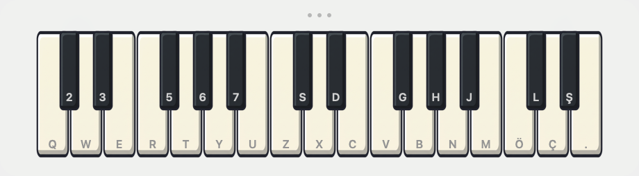
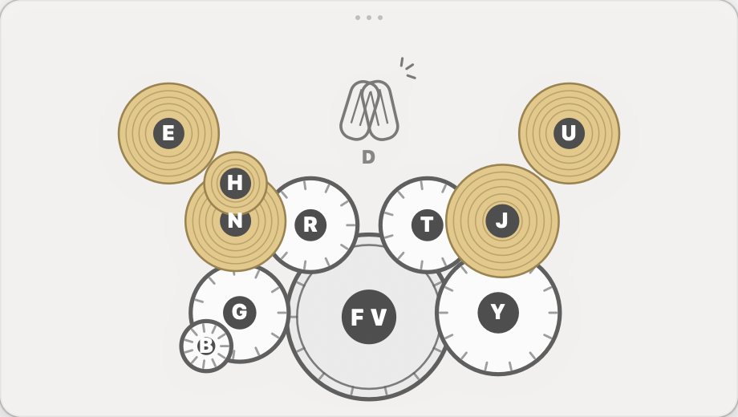
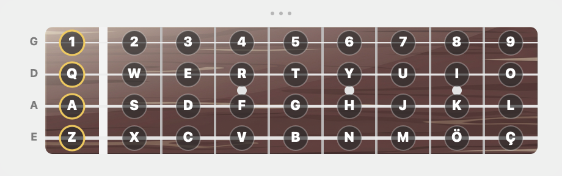
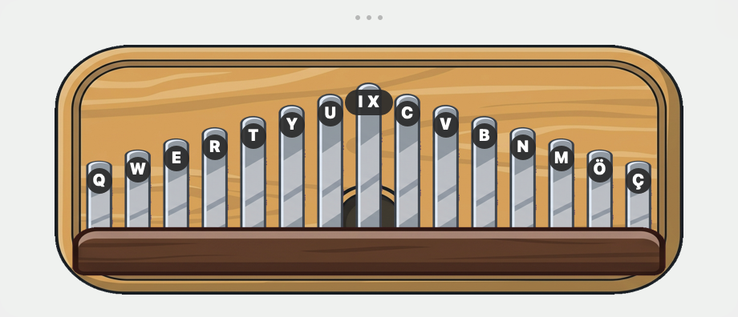
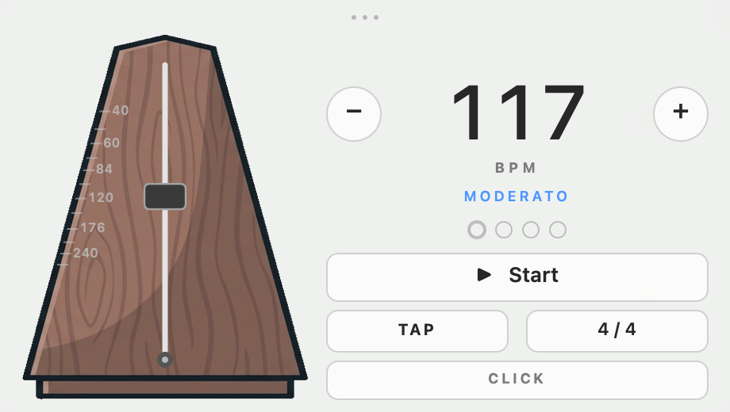
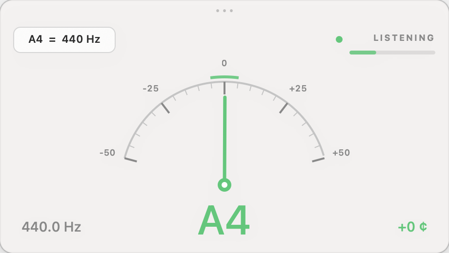

A piano, a drum kit, a bass, a guitar, a kalimba, a metronome and a tuner — floating on your
desktop, one click away, gone when you're done. No dock icon. No project to open. Nothing to save.
Actual size. It sits above your work, wherever you drag it.
The party trick
Just wave your cursor across the strings.
No click. No focus. Brush the pointer over the guitar and it strums — even when
Deskestra isn't the app you're working in. Pick a chord with one key, then let your
hand drift across the strings on the way to something else.
Seven of them
Every one plays from the keyboard you're already typing on.
No MIDI controller, no setup, no sample library to download — Deskestra uses the General MIDI
bank macOS already ships with.

Piano Free
Seventeen white keys with their sharps — C3 up to E5 — fully polyphonic, with an octave shift
that reaches from C0 to C8. Five voices, from grand to Rhodes to harpsichord.
the top row, then the whole bottom row · sharps on the row above each

Drums Free
Twelve pieces in one tight cluster your hands never have to leave, with each pair stacked in a
column — kick above kick, the snare's two voices, the hat's two. Every piece is placed in the
stereo field where you can see it, so the crash on the left arrives on the left. Four kits,
including a TR-808.
FV kick · G snare · N hi-hat · RTY toms

Bass Free
Four strings, open plus eight frets, and one note per string at a time — like a real one.
Each row of your keyboard is a string, nine keys long. Finger, pick, upright, fretless or slap.
number row = G · top row = D · home row = A · bottom row = E
Guitar Free
Fourteen chords — seven majors on the top row, seven minors below — and six strings you
strum by moving the mouse. Clean, jazz, steel, nylon or overdriven.
Q…U C to B major · A…J minor

Kalimba Free
The one for people who don't play an instrument. Fifteen tines, two octaves of plain C major,
so there is no wrong note to hit — brush the cursor across them and whatever comes out is
music. Laid out like a real one, lowest note in the middle and the scale fanning outward, with
the keys fanning out from the middle too. Also marimba, vibraphone, music box and glockenspiel.
two keys for the centre tine · the top row fans left, the bottom row fans right

Metronome Free
The click is placed sample by sample inside the audio engine, so it cannot drift — and the
pendulum is driven by that same clock, so it swings exactly on the beat rather
than near it. Tap tempo, 1–8 beats per bar, three click sounds.
Space start · T tap tempo · ←→ tempo

Tuner Free
Chromatic, accurate to a couple of cents, with a needle that moves at 60 frames a second so
closing in on a string feels smooth instead of twitchy. Green in tune, orange close, red
off. Reference pitch anywhere from 432 to 446 Hz.
note name · hertz · cents · input level
A desk toy, not an app
It stays out of the way until you want it.
No dock icon
Deskestra lives in the menu bar. Click the icon to show or hide it; it never joins your app switcher.
Always on top, if you like
Keep it floating over your editor, or let it fall behind like any other window. Drag it anywhere by its grip.
Plays unfocused
You don't have to click into it first. Hover-strum the guitar while your text cursor stays exactly where it was.
Light and dark
Follows your system, or pin it to one. The frame is real vibrancy, so it picks up whatever is behind it.
Any keyboard layout
Instruments follow the physical keys, and each one shows the letter your own keyboard prints on it. Turkish Q, AZERTY and QWERTZ all play the same.
Opens at login
One switch. It's there every morning, taking up eighteen pixels.
About two megabytes
No bundled sample library. Deskestra plays the General MIDI bank macOS already has, so there is nothing to download.
Privacy
Deskestra collects nothing, and has no server to collect it on.
The tuner listens through your microphone only while the tuner is the instrument on
screen — the macOS recording indicator matches exactly what the app is doing. That audio
is measured for pitch and thrown away: it is never recorded, never stored, and never sent
anywhere. Deskestra makes no network connections at all — not one, not even Apple's: there is nothing
to buy, so there is nothing to check.
Read the privacy policy →
Price
Free. All seven of them.
Every instrument, every voice, no purchase anywhere in the app.
Free all of it
Piano — five voices
Drums — four kits
Bass — five voices
Guitar — five voices, hover-strum
Kalimba — five voices, no wrong notes
Metronome
Tuner
No in-app purchases, no subscription, no trial timer, no account, and no ads.
Questions
Before you download it.
Does it need an internet connection?
No. Every instrument works offline, forever. The only moment a connection is needed is buying or
restoring an instrument, and that is handled by Apple's App Store rather than by us.
Do I have to install any sounds?
No. Every instrument plays the General MIDI bank that ships with macOS, which is why the app
is about two megabytes instead of several hundred.
Will it slow my Mac down?
It does essentially nothing until you play something. The tuner is the only part that works
continuously, and only while it's the instrument on screen.
Can I play it while I'm working in another app?
Yes — that's rather the point. The window doesn't steal focus, and the guitar strums on hover
without a click.
Why is the piano free?
Because a desk toy you have to pay for before you know whether you like it isn't a desk toy.
Play the piano, run the metronome, tune your guitar. The drums are right there too, and so is everything else.
Is my microphone always on?
No. Recording starts when you open the tuner and stops when you leave it. Nothing is recorded
or transmitted at any point — see the privacy policy.
Does it work on my keyboard layout?
Yes. Every instrument is mapped to physical keys rather than to letters, and the letter drawn on
each key, tine or drum is the one your own layout prints there — so the fingering is identical on
a US, Turkish, French or German keyboard.
Which Macs does it run on?
macOS 13 Ventura or later, on both Apple silicon and Intel.